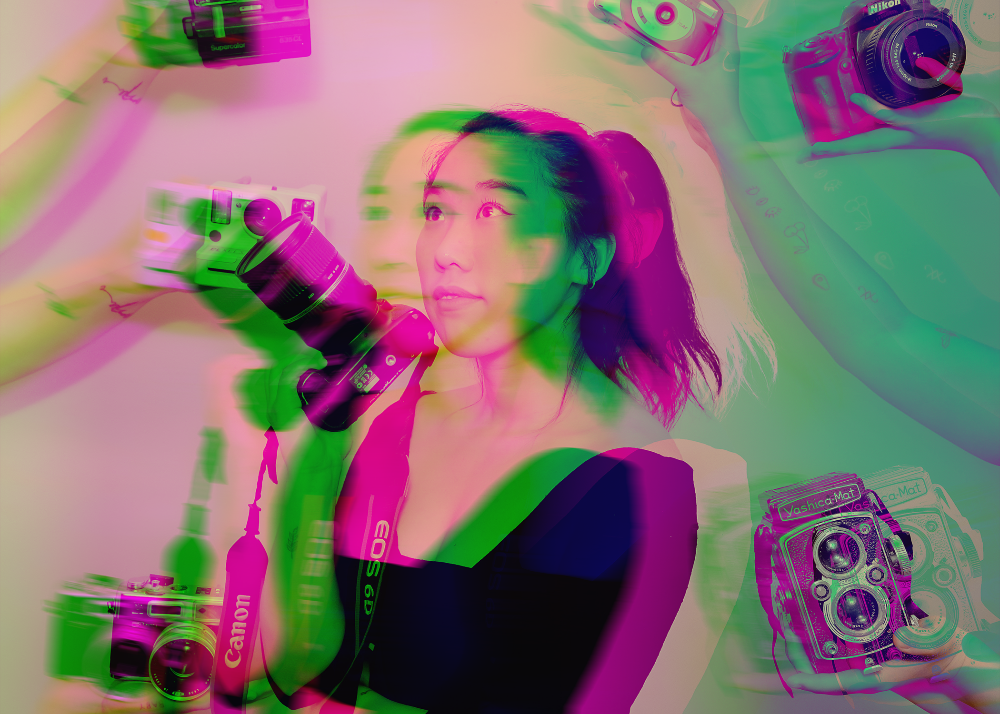
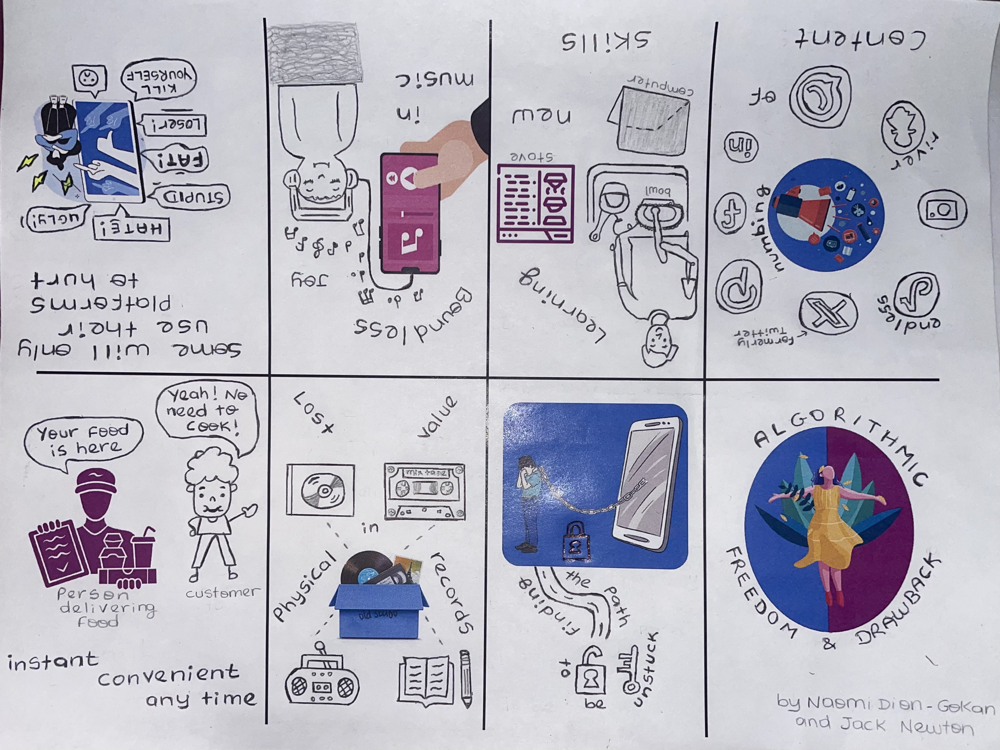
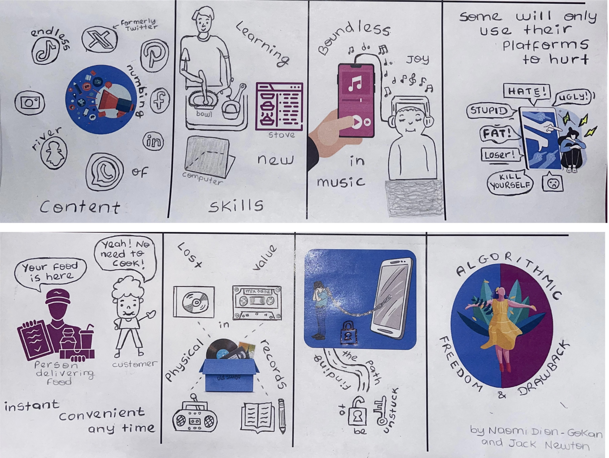

For the image to the left: Vintage. Living in a world of simplicity where nature is
always a friendly companion as well as the old buildings surrounded. Those modest but
effortless elements fill the atmosphere and one’s soul. However, changing the
environment where everything is different always gives a new look. Maybe better
looking or better feeling?
For the image to the right: Thriving. Living in a world where everything wants our
attention from all the directions, where everything wants to pull us to different
locations. This person is dedicated to focus her attention to a focal point she
wants to without letting those elements disturb what she really wants. It is devotion.

Found Footage
It portrays the era where we live now, where technology is everywhere and where everything we do is related to it.
I wanted to show that all how much we consider technology as a way to survive our lives as well as how much we rely on
technology, to the point that some group of people and companies are willing to replace humans working robots and technology
related components. Not to forget that that same thing makes us humans, less present in the real world and being
centered/focused into the virtual world, which ultimately deteriorates our relationships with each other and even ruin
our “physical” lives. At the end, I wanted to present an illustration of whether or not humanity will come to an “end”.
Zine
The right image is the same as the left. However, it shows the upward rotation of the image. Living in a world where technology thrives and is present in mainly everyone lives.
It is essential to be aware of how to use it and how not to use it by learning about
its drawbacks and the freedom it offers. Those elements are clearly portraits by the
illustrations, however they can be more explicit and contain more information and details.
The advantages are: learning new skills such as cooking to be able to eat. Listening to
music and being lost in the universe of music to feel better. Being able to order food
at any time and receive it in a short amount of time, which is helpful when one is
busy and does not have enough time to cook.
The disadvantages are: Cyberbullying, which affects the person being affected by it
because the person would feel sad, hated and depressed. People are attached
to their phone to the point that they are enslaved by it and cannot find the key to
unlock that freedom from it. People lose the physical aspect of life, the physical
touch of things such as writing on a paper with a pen instead of a computer.


Logo Animation
It conveys this idea of the plant or tree of life, with the stars representing the universe. We know that
the world is spinning, so to represent that, we have the stars(elements of the universe) spin together at the same
speed, sometimes fast, sometimes slow. While the plant that represents states of human areas of life, changes scaling:
too small, too large, too long. It is not set to one area, but a different one, giving the watcher the ability to explicitly
choose that sector of existence.Both elements express differences and change from both the universe and the living creatures,
which is the essence of humanity. Because everything, every situation, every person needs to change and adapt to the new or
given circumstances.
Sound Project
There is a mixt of songs, acute, but beautiful with the interpretation by an angelic voice that can relate to the
theme and have a thoughtful melody. At the same time, there is a deep, strong and emotional voice with a dark melody. In addition,
we have a song with a melody that is calm, but at the same time decisive about what to do next. Then we encounter the last song with
a melody that is completely different, filled with rock and anger, but at the same time, a melody that makes you want to get out of
your chair and move. We include some melodies that are not songs to start and end the composition. The starting one to be calm and
peaceful and the ending one to be joyful and exciting to listen to. With all those different mixt but similar themes, I wanted to
portray that unity in theme can make differences in melody, but be perceived sometimes as a melodious unity.